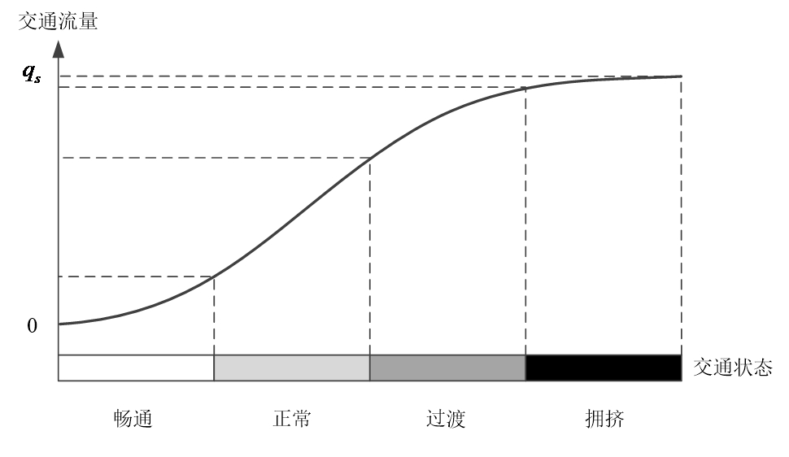

Abstract
对于道路交通状态的分析评判一直是交通领域的一个重要研究课题。基于短时预测的交通状态分析，顾名思义，是一种通过短时交通预测建立模型的交通状态分析方法。本方法有两个创新点：
- 使用预测数据代替实时数据作为分析评判的输入
- 建立数据的特征相似性模型
States
对于如下的一条普通道路：
可以划分出这样四类状态（也可以划分为三类，依需求而定）：

这里的状态划分就需要应用聚类模型了。
Preprocessing
数据准备
状态划分的准备工作有很多，其中最重要的一项是数据的采集，该方法需要使用路段流量(q)、时间占有率(θ)、平均行程速度(v)、排队长度(l)和平均延误时间(d)等五个交通参数进行统计分析。为简化准备过程，可以选择提取 01:00 ~ 03:00、11:00 ~ 13:00、15:00 ~ 17:00 以及 17:00 ~ 19:00 四个时间段的数据作为代表。当然，其中还需要包含简单的数据过滤工作。
聚类分析
成熟的聚类算法有很多，这里由于包含隐变量的估计，所以可以选择 k 近邻或者 EM 这样的无监督分类算法。聚类的结果是对应于前文所定义状态的四个特征向量
Ti = (qi, θi, vi, li, di)，i = 1, 2, 3, 4.
四个特征向量分别代表畅通、正常、过渡和拥挤这四种交通状态。
接下来就是实时数据处理过程了。
Real-time analysis
短时流量预测
由于采集数据固有的延时性特征，对于交通状态的表征理论上会存在偏差，这里就采用了短时交通预测的思想，使用预测值作为分析算法的输入来降低这种误差。预测方法为修正的平均法：
q0 = αQ + (1 - α)Q'
这里修正系数 α 使用 Sigmoid 函数构造：
α = 1 / (1 + e-z)
处理完流量后，对所有的输入参数做归一化处理，可以得到表征路段当前状态的特征向量：
T = (q, θ, v, l, d)
状态判定
实际的状态确定过程比较简单，分别比较实时特征量与四个聚类特征量：
si = |cos< T, Ti>|，i = 1, 2, 3, 4.
取 sj = max(si)，即选择与聚类特征量最接近的状态作为最终交通状态结果。
Conclusion
本文使用的特征量相似性度量方法是机器学习中文本分类的常用方法，短时交通预测也是交通领域的常用方法，两者结合构造的模型虽然很简单，但也不失为一种有效的创新方法（自卖自夸脸）。以前常常思考我们这些普通人一辈子也做不出什么惊天动地的技术突破，那所做的努力的意义何在呢？后来看了 意识到了自己没有办法成为 top 1% 的程序员，还应该选择程序员的道路么？ 这样的问题之后才豁然开朗，其实只要努力的方向靠谱，达到比较“优秀”的目标远比想象中的容易，就算不能达到，在这种过程中所做的成果也是有意义的，因为科学技术正是靠着无数的微创新推动的，而不仅仅是大牛们的灵光一现。而这也正是这个 Blog 存在的意义 :-)
Comments
comments powered by Disqus